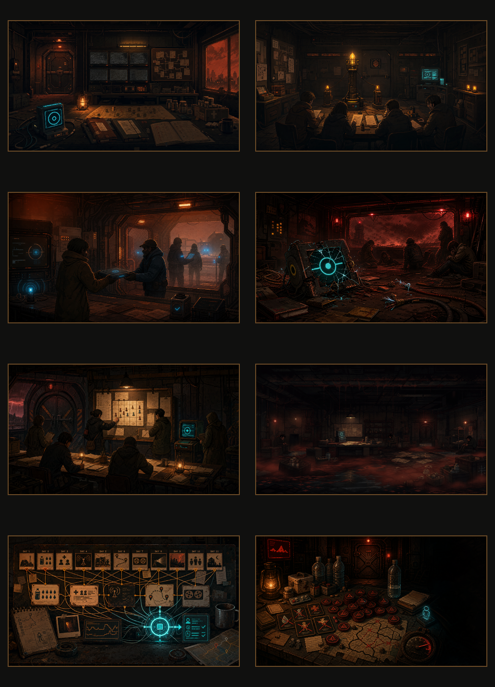

Final Audit 与 Ending 面板先读 Image 2 专用图，再回退到旧 SVG，最后回退到通用 shelter 背景。
Red Dust / Day 12 Final Audit
Image 2 美术补强记录
本批次为 Day 12 Final Audit 生成 8 张 Image 2 位图素材，重点替换五结局候选卡和结局详情里的旧 SVG 占位感，并为 evidence chains 与 failure debt 增加独立视觉支撑。
8 runtime assets
5 endings
2 audit support cards
Image 2
总览
文件位于 public/assets/final-audit-art/，运行时注册在
src/data/finalAuditArtAssets.ts。旧 story-art SVG 仍保留为 fallback。

运行时素材
| Asset Key | Use | Prompt Anchor | Status |
|---|---|---|---|
rd_day12_final_audit_hero_img2 | Final Audit 背景与审计主图 fallback | 风暴压差、离线监控、证据桌、AURA 旁观 | Integrated |
rd_ending_lighthouse_success_img2 | 楼内灯塔候选卡与结局详情 | 低功率楼内灯塔、封门、自治规则 | Integrated |
rd_ending_blue_zone_return_img2 | 蓝区归航候选卡与结局详情 | 救援交接、隐私链路、外部蓝光 | Integrated |
rd_ending_aura_destroyed_img2 | AURA 被摧毁候选卡与结局详情 | 破损终端、断裂审计链、红色警报 | Integrated |
rd_ending_aura_revoked_img2 | AURA 被撤权候选卡与结局详情 | 人工治理板、AURA 旁观、撤权后的不安 | Integrated |
rd_ending_sinking_img2 | 沉沦候选卡与结局详情 | 未解债务、渗漏红沙、冻结 AURA | Integrated |
rd_day12_evidence_chains_img2 | Evidence Chains 区块顶部视觉 | 每日任务卡、资源、信号、医疗复核互相连线 | Integrated |
rd_day12_failure_debt_img2 | Failure Debt 区块顶部视觉 | 延期任务筹码、失败标记、风暴压力表 | Integrated |
接入规则
统一使用暗色红沙、琥珀警示灯、青色 AURA 光源、手绘 2D 与轻微像素质感，避免和现有 demo 脱节。
validate:script 会检查 8 张 Day 12 Image 2 文件是否注册、存在并达到基本体积阈值。